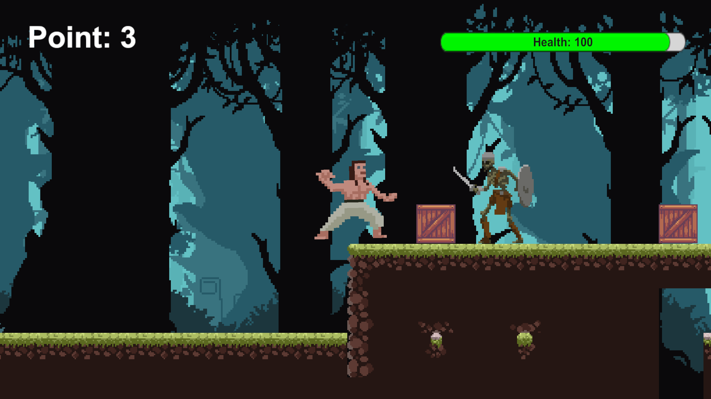
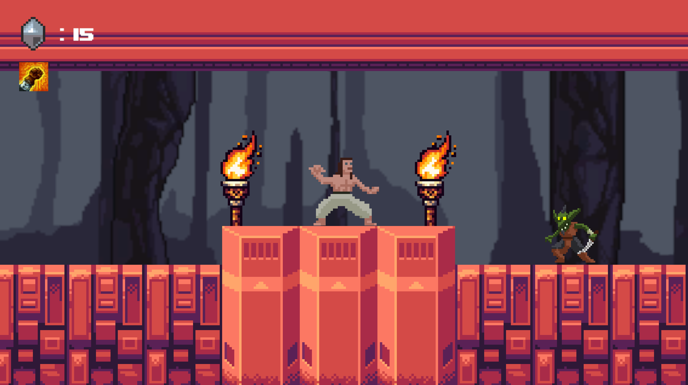
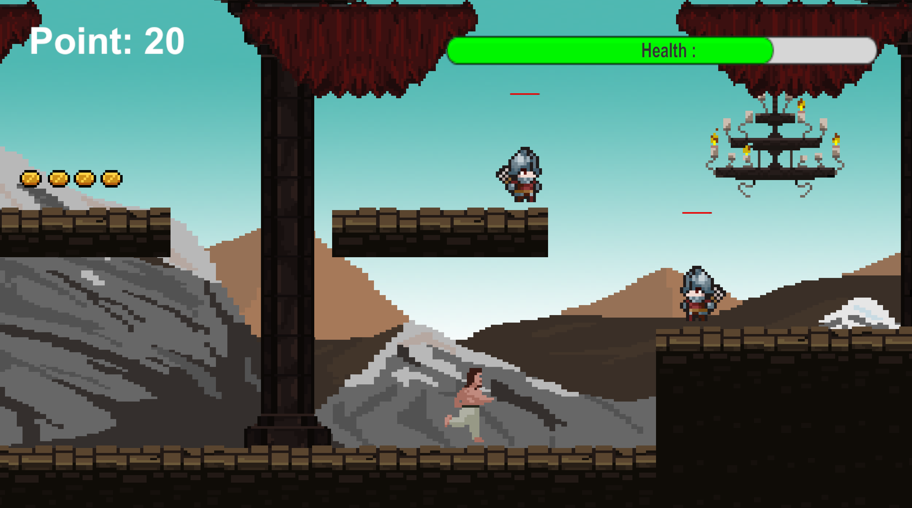

Multiversal Destiny: A 2D odyssey of courage and Malay heroism.
2D Action-Adventure
PC (Windows)
Offline / Local Persistence
Ages 15+ Enthusiasts
In "Badang: Multiversal Destiny," players assume the mantle of a valiant warrior from the Village of Pahat. Armed with cosmic forces and martial arts, Badang must navigate fractured realms to restore balance to the multiverse and thwart the malevolent Sorcerer Raja Siong.

Village of Pahat: Defending the homeland from interdimensional rifts.The journey spans four distinct modules, each featuring unique mechanics and environmental puzzles. Players descend from the mysterious Waterfall Cave into the abyssal depths of the Underworld, where supernatural powers are required to combat creatures born of shadow and despair.

The Underworld: Where the veil between dimensions grows thin.The odyssey culminates in the Eternal Castle, a fortress where reality bends to dark magic. Badang must storm the throne room to confront Raja Siong, using gathered artifacts and mastered abilities to seal the interdimensional portal and save all existence.

Storming the fortress of Raja Siong to restore peace.